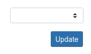

Bootstrap Kurulumu
Head bloğu içerisine bootstrap css dosyasına link oluşturdum ve belirli ekran boyutlarında görünümün değişmemesi için belirli eklentileri ekledim;
<head>
<meta charset="utf-8" />
<meta name="viewport" content="width=device-width, initial-scale=1, shrink-to-fit=no" />
<meta name="description" content="" />
<meta name="author" content="" />
<title>İbrahim Eres</title>
<link href="styles.css" rel="stylesheet" />
</head>
body bloğu sonunda bootstrap js dosyalarına link oluşturdum;
<script src="https://cdn.jsdelivr.net/npm/bootstrap@5.1.3/dist/js/bootstrap.bundle.min.js"></script>
<script src="scripts.js"></script>
</body>
Bootstrap 5 Select Menu
Bootstrap 5 ile select menu yapısının ne olduğunu, ne işe yaradığını sizlere aktaracağım.
Bootstrap Nedir?
Bootstrap, kullanılabilir kod parçalarından oluşan açık kaynaklı ve ücretsiz bir web uygulaması geliştirme araç takımıdır. Sahip olduğu CSS ve JavaScript taslakları, web sitelerinin ve mobil uygulamaların kullanıcılara görünen bileşenleri için kullanılır.
Select Menu nedir?
İnternet sitelerinde, fazla alt sayfa veya kategori olması durumunda kullanılan tıklama ya da fare imleci ile üzerine gelince açılan menülerde seçim yapmamızı sağlar.
Select Menu
Kullanıcının birden fazla seçenek arasından seçim yapmasına izin vermek istiyorsanız seçim menüleri kullanılır.
Bootstrap 5'te bir seçim menüsüne stil vermek için,form-select classını select öğesine ekleyin.
Basit bir seçilebilir menü yaptım;
<form action="/action_page.php">
<label for="sel1" class="form-label">Select list (select one):</label>
<select class="form-select" id="sel1" name="sellist1">
<option>1</option>
<option>2</option>
<option>3</option>
<option>4</option>
</select>
Disabled Select Menu
Seçim menüsünü devre dışı bırakmak için disabled özelliğini kullanabilirsiniz:
Buna örnek olarak;
<form>
<select class="form-select" disabled>
<option>1</option>
<option>2</option>
<option>3</option>
<option>4</option>
</select>
</form>
Data Lists
Bootstrap ayrıca, bir < input > öğesi için önceden tanımlanmış seçeneklerin bir listesi olan veri listelerini de biçimlendirir.
<form action="/action_page.php">
<label for="browser" class="form-label">Listeden tarayıcınızı seçin:</label>
<input class="form-control" list="browsers" name="browser" id="browser">
<datalist id="browsers">
<option value="Edge">
<option value="Firefox">
<option value="Chrome">
<option value="Opera">
<option value="Safari">
</datalist>
<button type="submit" class="btn btn-primary mt-3">Gönder</button>
</form>
